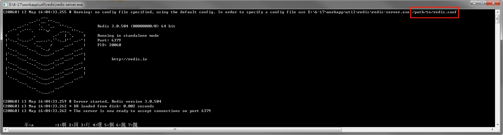
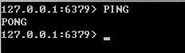
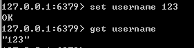
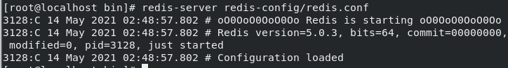
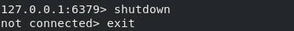
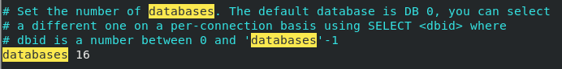

Redis入门
0. 网址
中文网：http://redis.cn/
官方介绍：http://redis.cn/topics/introduction
Windows版下载地址：https://github.com/microsoftarchive/redis/releases/tag/win-3.2.100
Window版本Redis需要在Github上下载（停更很久了），
Redis推荐是在Linux服务器上搭建的

1. 概述
Redis（Remote Dictionary Server），远程字典服务。
使用ANSI C语言编写、支持网络、可基于内存亦可持久化的日志型、Key-Value数据库，并提供多种语言的API。
redis会周期性的把更新的数据写入磁盘或者把修改操作写入追加的记录文件，并且在此基础上实现了master-slave(主从)同步。
免费和开源！是当下最热门的NoSQL技术之一，也被人们称为结构化数据库。
2. 作用
- 内存存储、持久化，内存中的数据是断电即失，所以持久化很重要（rdb、aof）
- 效率高，可以用于高速缓存
- 发布订阅信息
- 地图信息分析
- 计时器、计数器（浏览量！）
- ……
3. 特性
- 多样的数据类型
- 持久化
- 集群
- 事务
- ……
Windows安装
下载安装包
下载完毕得到压缩包，解压即可
开启Redis运行服务即可（注：此时可以看到，此次运行redis使用的配置文件为 /path/to/redis.conf，并没有用到配置文件redis.windows.conf，因此配置文件中的内容并不会生效，若要生效需要使用命令：redis-server.exe redis.windows.conf 运行redis）

使用redis客户端连接redis服务端（双击即可打开），连接测试：输入PING命令，会回复PONG

- 使用： set key 123；get key

Linux安装
1. 安装
1 | 1. 下载获得安装包 |
2. 修改redis为后台启动
redis默认不是后台启动的，若需要后台启动要修改配置文件。
1 | 搜索daemonzie 修改为yes |
3. 启动redis服务
1. 通过指定的配置文件启动服务
redis-server redis-config/redis.conf

2. 查看是否启动成功
1 | 或使用ps -ef查看redis是否启动 |
3. 连接到服务
1 | redis-cli -p 端口号 |
4. 停止服务 shutdown
1 | 在客户端输入命令 |

redis-benchmark性能测试
官方自带的压力测试工具

测试并发连接
1 | 测试：100个并发连接，10000请求 / s |
测试结果分析
1 | ====== SET ====== |
Redis基本知识说明
1. redis默认有16个数据库，默认使用第0个数据库

1 | 使用 select 切换数据库 |
2. Redis是单线程的
Redis是单线程的
Redis是基于内存操作，CPU不是Redis的性能瓶颈，Redis的瓶颈是根据机器的内存和网络带宽的，既然可以使用单线程就使用了单线程！
为什么Redis单线程还那么快
Redis是C语言写的，官方提供的数据为10W+ 的QPS，完全不必同样使用key-value的Memcache差
- 误区1：高性能的服务器一定是多线程的？
- 误区2：多线程一定比单线程效率高？（CPU上下文切换也会消耗资源）
- 运行速度： CPU > 内存 > 硬盘
核心：redis是将所有的数据全部都放在内存中的，所以说使用单线程去操作效率就是最高的，多线程（CPU上下文会切换：耗时的操作），对于内存系统来说，如果没有上下文切换效率就是最高的，多次读写都是在一个CPU上，在内存情况下，这个就是最佳方案！